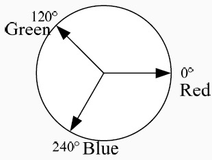
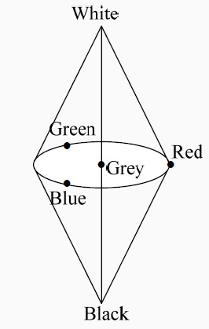
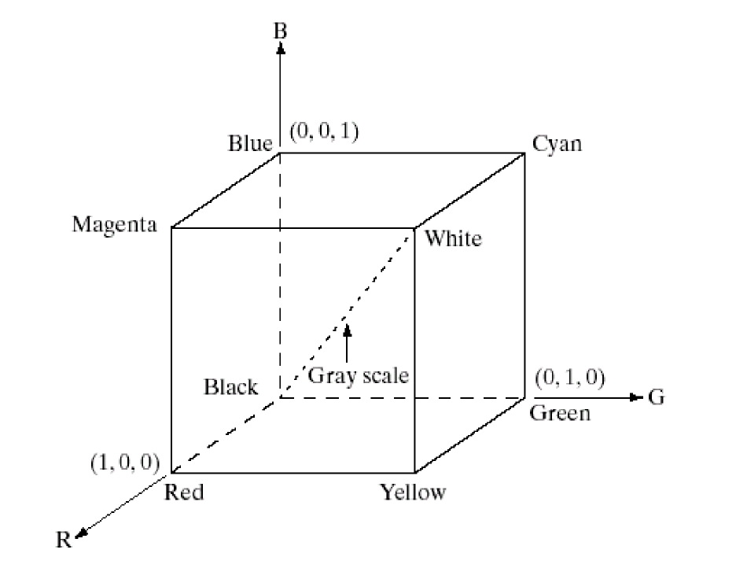
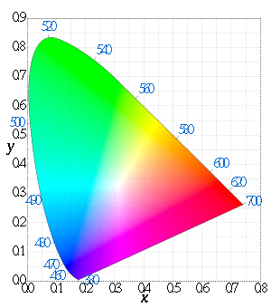

数字图像处理(2)：数字图像基础
Last updated on November 6, 2025 am
这是SJTU-CS3324《数字图像处理》课程的知识点整理系列。本文整理部分为“第 2 章：数字图像基础”。
数字图像处理基础
- 数字图像的分类：
- 灰度图像（Gray Scale Image）：，
- 二值图像（Binary Image）：
- 彩色图像（Color Image）：RGB 模式下，由 、、 组成
- 不可见光的图像（Image from Invisible light）：伽马射线、X 射线、紫外线、红外线、微波、无线电波
- 光谱图像（Spectrum Image）：，飞机/卫星生成，用于物体识别、图像匹配
- 图像序列（视频）（Images sequence，Video）
- 立体图像（Stereovision）：左视角 + 右视角，可用于 3D 重建
- 射线断层图像（Tomogram Image）：用于图像重建、CT
- 带水印的图像（Image with watermark）
- 数字图像处理：
- 底层处理：像素级别
- 图像增强：锐化、去噪、descratch、同态滤波（homomorphic filtering）
- 图像复原、图像压缩、图像分割
- 中高层处理：图像分析、图像识别、图像理解、模式识别、计算机视觉
- 底层处理：像素级别
- 图像通信系统：

- 图像质量问题：
- 客观评价：PSNR、MSE
- 主观评价：
采样与重建（Sampling & Reconstruction）
- 采样与重建：对坐标值进行数字化称为采样，采样的逆过程是重建
- 空间频率：单位距离内图像灰度值的变化次数
- 采样定理（Sampling theorem）：只要采样频率足够高（大于信号最高频率的 2 倍），原始的连续信号（有限带宽）就可以被完美重建，不会失真
- 1D 情况：原始信号 被重建的条件是
其中 是采样间隔， 是 的最高空间频率
- 2D 情况：原始信号 被重建的条件是
即在 和 方向上都必须满足采样定理，才能无失真地重建图像（使用理想低通滤波器）
- 注意：1D 和 2D 情况都要求原信号带宽有限（limited-band）
- 1D 情况：原始信号 被重建的条件是
量化（Quantization）
- 量化：对幅度值进行数字化称为量化，会造成图像信息损失
- 量化失真：人眼对灰度的感知有一个敏感阈值，只要选择足够大的 ，就可以使得量化带来的失真小于这个阈值，从而人类无法察觉
辐射度学基础 (Radiometry Fundamentals)
- 视敏度 (Visual Acuity)：人眼对不同波长的光的敏感度不同，对波长为 555nm 的绿光最敏感
- ：不同波长的光带来相同亮度感知时的辐射功率
- 视敏度（Visual sensitivity）：
- 相对视敏函数（relative visual acuity function）：
- 光通量（Luminous Flux）：根据人眼感知定义的光的总功率，单位是 （lumen）
- 对绿光：
- 对多色光：
- 对绿光：
- 发光强度（Luminous Intensity）：点光源在特定方向单位立体角内发出的光通量，单位是 （Candela）
- 照度（Illuminance）：单位面积上接收到的光通量，单位是 （lux）
- 亮度（Brightness）：辐射表面的明亮程度，单位是
- 对于一个漫反射表面，其亮度与观察距离无关
色度学基础 (Colorimetry Fundamentals)
- 光与颜色的关系：
- 不同波长的光有不同的颜色
- 不同光的组合可能产生相同的颜色
- 红、绿、蓝可以组成绝大多数颜色
色彩空间（Color space）
- HSI（Hue, Saturation, Intensity）：
- 色调(H)：颜色的种类
- 饱和度(S)：颜色的纯度或鲜艳程度
- 强度(I)：对应于亮度
- Chroma（色度）：Hue & saturation


- RGB（Red, Green, Blue）：用于显示器、投影仪等发光设备
- 依据：人类的视锥细胞有三种，分别对红、绿、蓝色敏感

- XYZ（CIE 1931）：一个标准的、设备无关的色彩空间，包含了人类能看见的所有颜色
- 要想获得白光，
- 规定基色单位当量，白光由 描述
- 将 RGB 坐标转换为 XYZ 坐标：
- 在归一化后，所有颜色可以在 2D 平面中表示
- 可以用 xyY 来表示颜色，其中 Y 表示亮度（Intensity）

- 电视信号中的色彩公式 (Formulas in TV)
人类视觉系统与错觉 (Human Visual System and Illusions)
-
视网膜上的光感受器：
- 视锥细胞（Cones）：明视觉（photopic vision）
- 视杆细胞（Rods）：暗视觉（scotopic vision）
-
亮度感知范围：，范围极大
- 亮度适应时间：从暗视觉到明视觉更快
- 适应后的感知范围：明视觉范围更大
- 主观亮度随周围亮度变化
- 主观亮度是光强度的对数函数
-
韦伯比率（Weber Ratio）：人眼对相对亮度有较好的判断
-
分辨率（Resolution）：
- 亮度分辨率（Brightness resolution）：人眼分辨不同亮度（灰度）等级的能力，韦伯比率
- 时间分辨率（Temporal resolution）：人眼分辨快速变化的图像的能力，如快速移动的物体
- 空间分辨率（Spatial resolution）：人眼分辨物体空间细节的能力，如精细的条纹
- 空间和时间分辨率存在 tradeoff，可以应用于图像和视频编码
-
对颜色的分辨率：人眼对彩色图像的分辨率低于灰度图像
- 应用：视频压缩，色度分量二次采样（Sub-sampling of chrominance components）
- 在存储时，保留全部的亮度信息，但大幅减少颜色信息的数量
- 应用：视频压缩，色度分量二次采样（Sub-sampling of chrominance components）
-
马赫带（Mach Bands）：在不同灰度级交界处，人眼会看到不存在的亮带和暗带
-
同时对比度（Simultaneous Contrast）：同一个灰度的方块，在黑色背景下看起来比在灰色背景下更亮
-
对比度敏感度函数 (Contrast Sensitivity Function)：人眼对中等空间频率的细节最敏感，对极高（非常精细）或极低（大面积缓慢变化）的频率不敏感
-
掩蔽效应（Masking effects）: 一个强烈的视觉特征会降低我们察觉其他特征的能力
视觉质量评价 (Visual Quality Assessment)
- 主观评价（Subjective Assessment）：MOS（平均主观意见分，Mean Opinion Score），由人打分
- 客观评价（Objective Assessment）：
- 全参考 (Full/Reduced Reference): 需要无失真的原始图像作对比
- PSNR（峰值信噪比，Peak Signal Noise Ratio）：PSNR 值越高，通常代表失真越小
- MSE（均方误差，Mean Square Error）：
- 无参考 (No-Reference): 无需原始图像，直接对失真图像进行评价
- 全参考 (Full/Reduced Reference): 需要无失真的原始图像作对比
参考资料
本文参考上海交通大学电子工程系《数字图像处理》课程 CS3324 闵雄阔老师的 PPT 课件整理。
数字图像处理(2)：数字图像基础
https://cny123222.github.io/2025/10/28/数字图像处理-2-：数字图像基础/